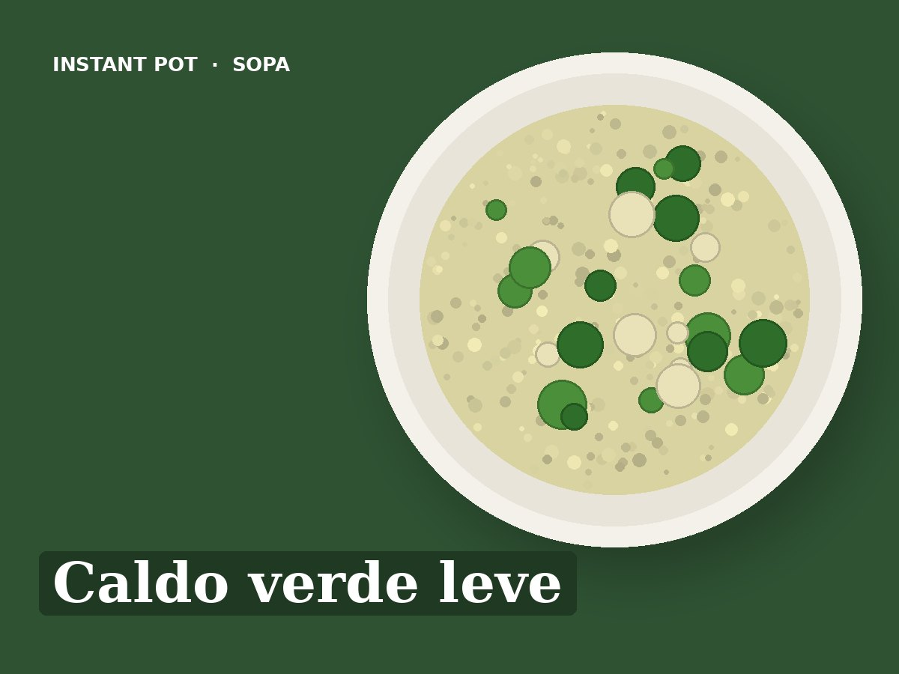

Caldo verde leve
Ingredientes
- 300 g de batata
- 1 cebola
- 2 dentes de alho
- 150 g de couve galega cortada fina
- 1 litro de água
- 1 colher de sopa de azeite
- Sal q.b.
Preparação
- Pôr a batata, a cebola, o alho, a água e o sal na panela.
- Pressão (Pressure Cook): Pressão alta, 8 minutos.
- Libertação natural 10 minutos.
- Triturar com a varinha mágica.
- Saltear (Sauté): Juntar a couve e cozinhar 5 minutos até ficar macia. Fio de azeite no prato.